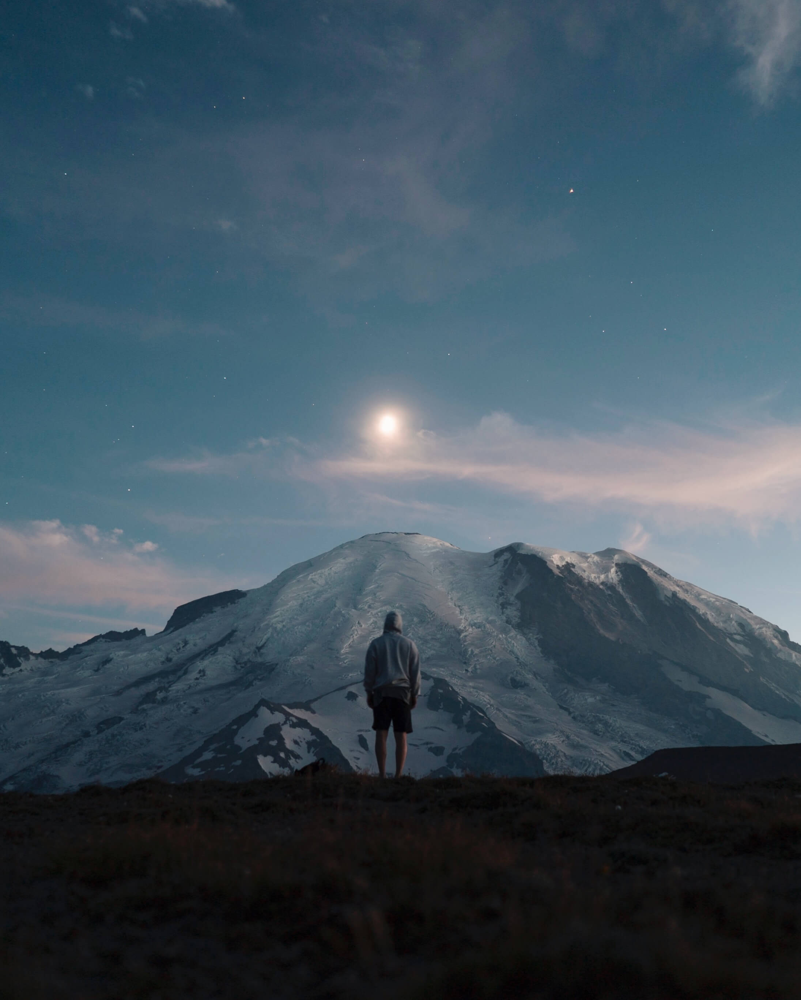

Куда я поеду
Куда я поеду сразу, как можно будет куда-то поехать
-
Поеду в лес
Лес — экологическая система, биоценоз, в которой главной жизненной формой являются деревья.
Лес — составная часть природы, понятие «лес» можно рассматривать на разных уровнях. В глобальном масштабе — это часть биосферы, в локальном — это может быть насаждение. Леса занимают около трети площади суши.

-

Поеду в горы
Горные системы занимают 64 % поверхности Азии, 36 % — Северной Америки, 25 % — Европы, 22 % — Южной Америки, 17 % — Австралии и 3 % — Африки. В целом 24 % земной поверхности приходится на горы. 10 % всех людей живёт на территории гор. В горах берёт своё начало большинство рек Земли.
-
Поеду на Чёрное море
Я уплыву туда, где ни разу я не был, туда, где никто раньше не был. Никто и никогда раньше не был, я уплыву. Я позову тебя смотреть на синее небо и пить по капле синее небо, и падать в это синее небо, я позову.
Уеду я на Чёрное-Чёрное море, на Чёрное-Чёрное море, на Чёрное-Чёрное море уеду я. Уеду я на Чёрное-Чёрное море, на Чёрное-Чёрное море, на Чёрное-Чёрное море.
Уеду я.

Люди
Что говорят и говорили люди о путешествиях
-
Иван Бунин
Человека делают счастливым три вещи: любовь, интересная работа и возможность путешествовать.
-
Альбер Камю
Путешествие как самая великая и серьезная наука помогает нам вновь обрести себя.
-
Норвежская пословица
Лишь тот, кто странствует, открывает новые пути.
-
Мария Захарова
В принципе зарубежная поездка – это серьезнейшее, ответственнейшее и очень рискованное предприятие.